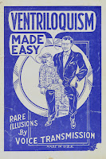
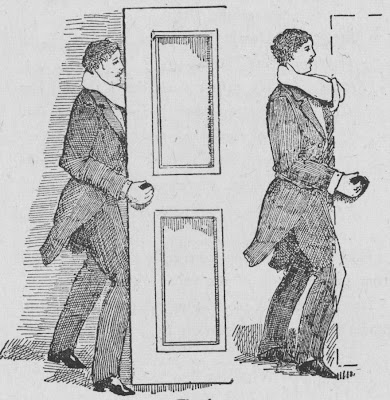

Amagamation of "near' and "distant" ventriloquism
11/2/2010
{kind=link}

By Robert GanthonyThe difficulties of amalgamation (of the "near" and "distant" voices) are in the fusion and transition from one style of ventriloquism to the other without exposing the "tricks of the trade" so to speak; without disclosing the art or disturbing the naturalness of the effect presented to the public.
The man who throws his voice to the ceiling and abrubtly leaves it there with some lame excuse is not a skilful amalgamator, but someone that needlessly makes the art appear less comprehensive than it is in reality.
You will bring the man down from the roof because "he has a ladder", or (otherwise). The ventriloquist may bring that man to the door and by covering the action with his body the vent opens the door and as he does so changes his ventriloquism from distant (above level) to the near grunt voive (ground level). An argument nay take place about coming in. In making the change when the door is partly opened and your back is to the audience your lips have full play ... your ventriloquism requires little effort and you can have a temendous row at the door, even to slipping your arm out of your left coat sleeve if the door (opening) be on the left, and accompany your Ventriloquism by a clever optical illusion (see below illustration).
In arranging these effects try and obtain the arranging of a friend to stage manage, as his eye and ear will tell you what is effective and what is not.
{kind=link}

* * * * *The above is an excerpt from Practical Ventriloquism by Robert Ganthony, one of the classic ventriloquist books of the early 20th century. Thanks to George Boosey, I have a 1995 reprint of this book (under the title, Ventriloquism Made Easy by Stein Publishing House) to give away. And the winner is: Dennis Fenske.